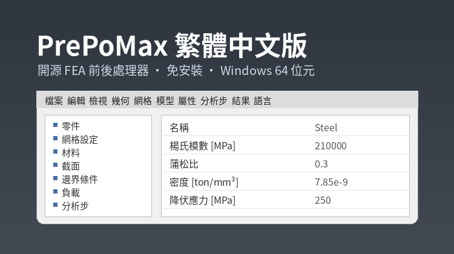

PrePoMax 是開源的有限元素前後處理器，內建 CalculiX 求解器。這是我自行中文化並編譯的非官方版本，介面選單、模型樹與屬性視窗都改為繁體中文，方便國內工程師上手。
D:\PrePoMax_zhTW 或使用者資料夾。PrePoMax.exe，預設即為繁體中文介面。C:\Program Files：PrePoMax 需要寫入自己的資料夾，放在受保護的位置會無法啟動。| 項目 | 狀態 |
|---|---|
| 選單、工具列、右鍵選單、對話框按鈕與標籤 | 已中文化 |
| 模型樹（零件、網格、材料、截面、邊界條件、負載、分析步…） | 已中文化 |
| 屬性視窗欄位、分類、說明文字、下拉選項（字典約 2,260 條） | 已中文化 |
| CalculiX 關鍵字與變數代號（PEEQ、Nlgeom、S、U…） | 保留英文，方便對照 .inp 與手冊 |
| 狀態列「Ready」等程式內部會判斷的文字 | 刻意保留英文，避免影響讀取結果 |
e0dede10c09341d9815bbc2e2da82c86a6a2dc8dab6632606dc485c9b4932aa4PrePoMax 由 Matej Borovinšek 開發，以 GPLv3 授權（官方網站）。原始碼取自 PrePoMax 官方 GitHub，早期版本的中文化參考 yozoyugen/PrePoMax_Multilingual。隨附元件包含 CalculiX（GPL）、Gmsh（GPL）、Netgen（LGPL）與 VTK / ActiViz（BSD）。依 GPLv3，修改後的完整原始碼與編譯腳本一併提供於發布頁面。